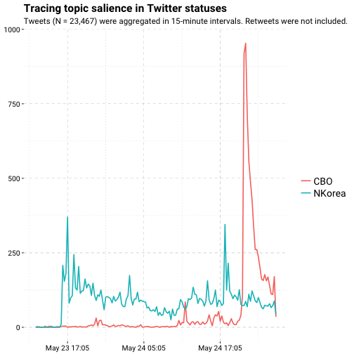
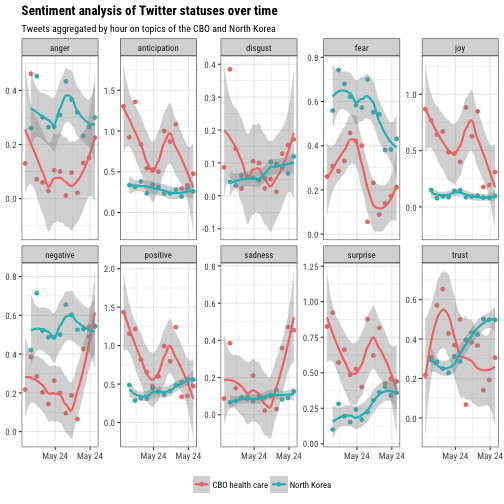

Getting started with Twitter data
Installing rtweet
Install from CRAN using install.packages.
## install from CRAN
install.packages("rtweet")
Alternatively, install the most recent [development] version from
Github using install_github (from the devtools package).
## install from Github (dev version)
if (!"devtools" %in% installed.packages()) {
install.packages("devtools")
}
devtools::install_github("mkearney/rtweet", build_vignettes = TRUE)
API authorization
I’ve tried to make the API token [oauth] process as painless as possible. That’s why I’ve included the “auth” vignette, which ships with the package and contains step-by-step instructions on how to create and manage your Twitter API token. The vignette also includes instructions for saving a token as an environment variable, which automates the token-loading process for all future sessions (at least, for the machine you’re using). View the authorization vignette online or enter the following code into your R console to load the vignette locally:
## Open Twitter token vignette in web browser.
vignette(topic = "auth", package = "rtweet")
Package documentation
In addition to the API authorization vignette, rtweet also includes a brief package overview vignette as well as a vignette demonstrating how to access Twitter’s stream API. To open the vignettes locally, use the code below.
## overview of rtweet package
vignette(topic = "intro", package = "rtweet")
## accessing Twitter's stream API
vignette(topic = "stream", package = "rtweet")
And thanks to pkgdown, rtweet now has a dedicated package documentation website. *Btw, while I’m on the subject of package documentation/maintenance, I’d also like to point out rtweet’s Github page. Contributions are welcome and if you run into any bugs or other issues, users are encouraged to create an Github issue.
Some applied examples
search_tweets
Searching for tweets is easy. For example, we could search for all
[publically] available statuses from the past 7-10 days that use the
hashtags #ica17 or #ica2017. In the code below I’ve specified
18,000 statuses (tweets), which is the maximum number a user may
request every 15 minutes.
## load rtweet
library(rtweet)
## search for tweets containing ICA17 or ICA2017 (not case sensitive)
ica17 <- search_tweets(
"#ica17 OR #ica2017", n = 18000, include_rts = FALSE
)
If there were more than 18,000 statuses that (a) fit the search query
and (b) exist in the last 7-10 days (the limit put in place by
Twitter), then users can continue where they left off by using the
max_id parameter. Since Twitter statuses are returned in order from
newest to oldest, the max_id value should just be the last status ID
returned by the previous search.
## select last (oldest) status ID from previous search
last_status_id <- ica17$status_id[nrow(ica17)]
## pass last_status_id to max_id and run search again.
ica17_contd <- search_tweets(
"#ica17 OR #ica2017", n = 18000, include_rts = FALSE,
max_id = last_status_id
)
Data returned by search_tweets is quite extensive. One recently
added feature makes navigating the data a bit easier. As of version
0.4.3, rtweet returns tibble data frames (assuming the user has
installed the tibble package, which is a dependency for nearly
all packages in the tidyverse). Tibbles are especially nice when
working with larger data sets because accidental printing in R has
been known to take years off of one’s life (needs citation).
ts_filter and ts_plot
Included in the rtweet package are a few convenenience functions,
which have been designed to assist in the analysis of Twitter data.
One of these convenient functions is ts_plot, which is a
plot-based wrapper around ts_filter. The ts_plot and ts_filter
functions aggregate the frequency of tweets over specified intervals
of time. Hence, the “ts” (time series) naming convention. In addition
to aggregating the frequency of statuses, ts_plot will also
plot the time series.
## aggregate freq of tweets in one-hour intervals
agg <- ts_filter(ica17, by = "hours")
## view data
agg
## # A tibble: 212 x 3
## time freq filter
## <dttm> <dbl> <chr>
## 1 2017-05-16 20:00:00 2
## 2 2017-05-16 21:00:00 0
## 3 2017-05-16 22:00:00 0
## 4 2017-05-16 23:00:00 0
## 5 2017-05-17 00:00:00 1
## 6 2017-05-17 01:00:00 0
## 7 2017-05-17 02:00:00 0
## 8 2017-05-17 03:00:00 0
## 9 2017-05-17 04:00:00 0
## 10 2017-05-17 05:00:00 0
## # ... with 202 more rows
## plot data
ts_plot(agg)
The plot produced by ts_plot depends on whether the user has
installed ggplot2, which is a suggested but not required package
dependency for rtweet. If you haven’t installed ggplot2 then
I highly recommend it. Assuming you have, then the object returned
by ts_plot can be treated like any other ggplot object, meaning
you can easily add layers and customize the plot to your liking.
## load ggplot2
library(ggplot2)
## plot a time series of tweets, aggregating by one-hour intervals
p1 <- ts_plot(ica17, "hours") +
labs(
x = "Date and time",
y = "Frequency of tweets",
title = "Time series of #ICA17 tweets",
subtitle = "Frequency of Twitter statuses calculated in one-hour intervals."
) +
## a custom ggplot2 theme I mocked up for ICA
theme_ica17()
## render plot
p1
plain_tweets
The second convenience function for analysing tweets is
plain_tweets. As you might guess, plain_tweets strips the text of
the tweets down to plain text. Because there are already variables included
in the default tweets data that contain links, hashtags, and mentions, those
entities are stripped out of the text as well. What’s returned are lower
case words. Below I’ve applied the function to the first few ICA17 tweets.
## strip text of tweets
plain_tweets(ica17$text[1:5])
## [1] "excellent posttruth preconference heres some background"
## [2] "panel w"
## [3] "nato"
## [4] ""
## [5] "inspiring talk by about creating engaging progressive and subversive media"
The plain_tweets function is relatively straight forward at cutting
through the clutter, but it still may not prepare you for quick and
easy analysis. For that, you can use the tokenize argument in
plain_tweets. The tokenize argument will return a vector of plain
text words for each tweet.
## tokenize by word
wrds <- plain_tweets(ica17$text, tokenize = TRUE)
wrds[1:5]
## [[1]]
## [1] "excellent" "posttruth" "preconference" "heres"
## [5] "some" "background"
##
## [[2]]
## [1] "panel" "w"
##
## [[3]]
## [1] "nato"
##
## [[4]]
## character(0)
##
## [[5]]
## [1] "inspiring" "talk" "by" "about"
## [5] "creating" "engaging" "progressive" "and"
## [9] "subversive" "media"
Identifying stop words
This can easily be converted into a word count [frequency] table, but it still leaves one problem. The most common words probably aren’t going to tell us a lot about our specific topic / set of tweets.
## get word counts
wrds <- table(unlist(wrds))
## view top 40 words
head(sort(wrds, decreasing = TRUE), 40)
##
## the to of and in
## 614 504 429 388 363
## for on at a is
## 290 284 247 235 181
## from media about as san
## 121 115 111 110 110
## with diego be i this
## 108 105 98 92 91
## we by you are our
## 90 88 85 78 76
## preconference my it social that
## 75 71 66 65 63
## data not see research communication
## 61 60 59 55 52
## now but up great us
## 51 50 50 49 49
See, these words don’t appear to be very unique to ICA 2017. Of course, we could always find a premade list of stopwords to exclude, but those may not appropriately reflect the medium (Twitter) here. With rtweet, however, it’s possible to create your own dictionary of stopwords by locating overlap between (a) a particular sample of tweets of interest and (b) a more general sample of tweets.
To do this, we’re going to search for each letter of the alphabet separated
by the boolean OR. It’s a bit hacky, but it returns massive amounts of
tweets about a wide range of topics. So, if we can identify the unique words
used in our sample, we may yet accomplish our goal.
In the code below, I’ve excluded retweets since those add unnecessary redundancies (and, ideally, we’d want a diverse pool of tweets). It’s still not perfect, but it gives us a systematic starting point that I imagine could be developed into a more reliable method.
## construct boolean-exploiting search query
all <- paste(letters, collapse = " OR ")
## conduct search for 5,000 original (non-retweeted) tweets
sw <- search_tweets(all, n = 5000, include_rts = FALSE)
## create freq table of all words from general pool of tweets
stopwords <- plain_tweets(sw$text, tokenize = TRUE)
stopwords <- table(unlist(stopwords))
Now that we’ve identified the frequencies of words in this more general pool of tweets, we can exclude all ICA tweet words that appear more than N number of times in the general pool.
## cutoff
N <- 5L
## exclude all ica17 words that appear more than N times in stopwords
wrds <- wrds[!names(wrds) %in% names(stopwords[stopwords > N])]
## check top words again
head(sort(wrds, decreasing = TRUE), 40)
##
## diego preconference data research communication
## 105 75 61 55 52
## politics conference indigo political excited
## 48 42 40 37 36
## forward panel preconf presenting comm
## 34 29 29 29 26
## online paper digital populism ballroom
## 25 24 23 23 19
## discourse ica nato session altheide
## 19 19 19 19 18
## between join populist interesting hills
## 18 18 18 17 16
## technology fear friday hashtag papers
## 16 15 15 15 15
## presentation sapphire schedule scholars students
## 15 15 15 15 15
Creating a word cloud
That turned out well! These words look a lot more unique to the topic. We can quickly survey all of these words with a simple word cloud.
## get some good colors
cols <- sample(rainbow(10, s = .5, v = .75), 10)
## plot word cloud
par(bg = "black")
suppressWarnings(wordcloud::wordcloud(
words = names(wrds),
freq = wrds,
min.freq = 5,
random.color = FALSE,
random.order = FALSE,
colors = cols,
family = "Roboto Condensed",
scale = c(4.75, .5))
)
Filtering topics
If we wanted to model the topics of tweets, we could conduct two searches for tweets over the same time period and then compare the frequencies of tweets over time using time series. That’s what I’ve done in the example below.
First I searched for tweets mentioning “North Korea”, since I know they conducted another missile test on Monday.
## search tweets mentioning north korea (missle test on Monday)
nk <- search_tweets(
"north korea", n = 18000, include_rts = FALSE
)
Then I searched for tweets mentioning “CBO health care” (in any order, anywhere in the tweet), since I know the CBO was released on Wednesday.
## search for tweets about the CBO (released on Wed.)
cbo <- search_tweets(
"CBO health care", n = 18000, include_rts = FALSE
)
And then I combined the two data sets into one big data frame.
## create query (search) variable
cbo$query <- "CBO health care"
nk$query <- "North Korea"
## row bind into single data frame
df <- rbind(cbo, nk)
Using the ts_plot function, I then provide a list of filter words
(via regular expression; the bar is like an “OR”). Use the key argument
if you want to have nicer looking filter labels. By default ts_plot
will create groups based on the text of the tweet and the filters provided.
However, you can pass along the name of any variable in DF and the function
will use that to classify groups. In the code below, I applied plain_tweets
to the text to create a new variable, and then specified that I wanted to
apply the filters to that variable by using the txt argument in ts_plot.
## create plain tweets variable
df$text_plain <- plain_tweets(df$text)
## filter by search topic
p3 <- ts_plot(
df, by = "15 mins",
filter = c("cbo|health|care|bill|insured|deficit|budget",
"korea|kim|jung un|missile"),
key = c("CBO", "NKorea"),
txt = "text_plain"
)
Now it’s easy to add more layers and make this plot look nice.
## add theme and more style layers
p3 <- p3 +
theme_ica17() +
scale_x_datetime(date_labels = "%b %d %H:%m") +
theme(legend.title = element_blank()) +
labs(x = NULL, y = NULL,
title = "Tracing topic salience in Twitter statuses",
subtitle = paste("Tweets (N = 23,467) were aggregated in 15-minute",
"intervals. Retweets were not included.")
)
## render plot
p3

Tidy sentiment analysis
The syuzhet package makes sentiment analysis criminally easy.
## conduct sentiment analysis
sa <- syuzhet::get_nrc_sentiment(df$text_plain)
Within a few seconds, the analysis returns coded variables for several
categories of emotion and valence. A preview of the sentiment scores
returned by get_nrc_sentiment is provided below.
## view output
tibble::as_tibble(sa)
## # A tibble: 23,467 x 10
## anger anticipation disgust fear joy sadness surprise trust
## <dbl> <dbl> <dbl> <dbl> <dbl> <dbl> <dbl> <dbl>
## 1 1 0 0 1 0 1 0 0
## 2 0 0 0 0 0 0 0 1
## 3 0 0 0 0 0 1 1 0
## 4 0 0 0 0 0 1 1 0
## 5 0 0 0 0 0 1 1 0
## 6 0 0 0 0 0 0 0 0
## 7 0 1 0 0 0 0 0 1
## 8 0 0 0 0 0 0 0 0
## 9 0 0 0 0 0 1 1 0
## 10 0 0 1 0 0 1 0 0
## # ... with 23,457 more rows, and 2 more variables: negative <dbl>,
## # positive <dbl>
Since the return object is a data frame with the same number of rows as the CBO/North Korea data, the columns can easily be combined to create one data frame.
## bind columns
df <- cbind(df, sa)
This data structure is useful for most media researchers, but it’s not very flexible—either for summarizing the data or for visualizing it. Fortunately, recent advancements1 in data wrangling in R make converting this wide data to tidy, long data a breeze. In the code below, I’ve created a user function to assist in time-rounding efforts, and I’ve enlisted dplyr and tidyr to do the dirty work.
## load dplyr
suppressPackageStartupMessages(library(dplyr))
## create function for aggregating date-time vectors
round_time <- function(x, interval = 60) {
## round off to lowest value
rounded <- floor(as.numeric(x) / interval) * interval
## center so value is interval mid-point
rounded <- rounded + round(interval * .5, 0)
## return to date-time
as.POSIXct(rounded, origin = "1970-01-01")
}
## use pipe (%>%) operator for linear syntax
long_emotion_ts <- df %>%
## select variables (columns) of interest
dplyr::select(created_at, query, anger:positive) %>%
## convert created_at variable to desired interval
## here I chose 6 hour intervals (3 * 60 seconds * 60 mins = 3 hours)
mutate(created_at = round_time(created_at, 3 * 60 * 60)) %>%
## transform data to long form
tidyr::gather(sentiment, score, -created_at, -query) %>%
## group by time, query, and sentiment
group_by(created_at, query, sentiment) %>%
## get mean for each grouping
summarize(score = mean(score, na.rm = TRUE),
n = n()) %>%
ungroup()
The result is a tidy data paradise:
## view data
long_emotion_ts
## # A tibble: 250 x 5
## created_at query sentiment score n
## <dttm> <chr> <chr> <dbl> <int>
## 1 2017-05-23 08:30:00 CBO health care anger 0.13043478 23
## 2 2017-05-23 08:30:00 CBO health care anticipation 1.30434783 23
## 3 2017-05-23 08:30:00 CBO health care disgust 0.08695652 23
## 4 2017-05-23 08:30:00 CBO health care fear 0.26086957 23
## 5 2017-05-23 08:30:00 CBO health care joy 0.86956522 23
## 6 2017-05-23 08:30:00 CBO health care negative 0.21739130 23
## 7 2017-05-23 08:30:00 CBO health care positive 1.43478261 23
## 8 2017-05-23 08:30:00 CBO health care sadness 0.08695652 23
## 9 2017-05-23 08:30:00 CBO health care surprise 0.82608696 23
## 10 2017-05-23 08:30:00 CBO health care trust 0.21739130 23
## # ... with 240 more rows
Which we can pass right along to ggplot2 for the finish:
## plot data
long_emotion_ts %>%
ggplot(aes(x = created_at, y = score, color = query)) +
geom_point() +
geom_smooth(method = "loess") +
facet_wrap(~ sentiment, scale = "free_y", nrow = 2) +
theme_bw() +
theme(text = element_text(family = "Roboto Condensed"),
plot.title = element_text(face = "bold"),
legend.position = "bottom",
axis.text = element_text(size = 9),
legend.title = element_blank()) +
labs(x = NULL, y = NULL,
title = "Sentiment analysis of Twitter statuses over time",
subtitle = "Tweets aggregated by hour on topics of the CBO and North Korea") +
scale_x_datetime(date_breaks = "18 hours", date_labels = "%b %d")

And that’s it!
1: I’ll admit that for a time I was hesitant to embrace the collection of packages collectively known as the tidyverse (formerly known as the *Hadley*verse; see: https://github.com/hadley). But the tidyverse, and especially dplyr, is really quite amazing.